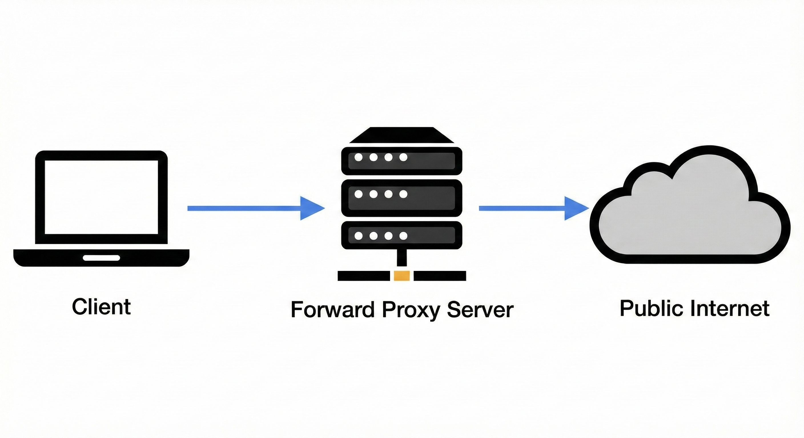

<!doctype html>
<html lang="ko">
<head>
    <meta charset="utf-8">
    <meta name="viewport" content="width=device-width, initial-scale=1.0, maximum-scale=1.0, user-scalable=no">

    <title>앱 서비스 아키텍처와 네트워크 완전 정복</title>

    <link rel="stylesheet" href="https://cdnjs.cloudflare.com/ajax/libs/reveal.js/4.5.0/reveal.min.css">
    <link rel="stylesheet" href="https://cdnjs.cloudflare.com/ajax/libs/reveal.js/4.5.0/theme/black.min.css" id="theme">
    <link rel="stylesheet" href="https://cdnjs.cloudflare.com/ajax/libs/reveal.js/4.5.0/plugin/highlight/monokai.min.css">

    <style>
        /* 이미지 스타일 조정 */
        .reveal section img {
            border: none;
            box-shadow: none;
            background: transparent;
            max-height: 300px;
        }
        /* 텍스트 강조 색상 */
        .highlight { color: #42affa; font-weight: bold; }
        .param-path { color: #ff6b6b; font-weight: bold; }
        .param-query { color: #4ecdc4; font-weight: bold; }
        .vpn-secure { color: #00d2ff; font-weight: bold; }
        .proxy-mid { color: #f1c40f; font-weight: bold; }
        .proxy-rev { color: #2ecc71; font-weight: bold; }
        .db-poly { color: #e67e22; font-weight: bold; }
        .cache-fast { color: #9b59b6; font-weight: bold; }
        .batch-slow { color: #e74c3c; font-weight: bold; }
    </style>
</head>
<body>

<div class="reveal">
    <div class="slides">
        <section data-markdown data-separator="^\n---\n$" data-separator-vertical="^\n--\n$">
            <script type="text/template">

# 앱 서비스 아키텍처와<br>네트워크

<br>
<small>네트워크, Proxy, DB, 캐싱, 그리고 배치까지</small>

---

## 1. 인트로 (Introduction)

--

### 왜 이 지식이 필요한가?

* **빙산의 일각:** 앱 화면(Frontend) 뒤의 거대한 시스템(Network, Backend, DB) 이해
* **기대 효과:**
    * 개발자와의 소통 비용 감소 <br>("안 돼요" ➡️ "400 에러입니다")
    * 데이터 갱신 지연 원인 파악 (DB 동기화, 캐싱, 배치)

---

## 2. 네트워크와 보안

--

### 네트워크 통신의 기본 요소

* **Client:** 요청하는 앱/웹
* **Server:** 응답하는 백엔드
* **DNS:** 주소록 (`naver.com` → IP)


--

### 🛡️ VPN과 내부망 (Intranet)

>>> "왜 Postman이 집에서는 안 되고 회사에서만 될까?"


* **Public Network:** 누구나 접속 가능.
* **Private Network:** <span class="vpn-secure">방화벽(Firewall)</span> 뒤에 숨겨진 서버들.
* **VPN:** 외부에서 내부망으로 들어가는 **'전용 터널'**.

--

### 🕵️‍♀️ Forward Proxy (내 대리인)

> "Charles / Proxyman은 어떻게 데이터를 볼까?"



* **역할:** 클라이언트(앱) 대신 요청을 보내주는 중계자.
* **용도:** 패킷 캡처, IP 우회, 캐싱.
* **QC 활용:** 앱이 보내는 요청을 가로채서 확인.

--

### 🛡️ Reverse Proxy (서버의 보디가드)

> "서버 앞단에 서있는 Nginx, Load Balancer"


* **역할:** <span class="proxy-rev">실제 서버(Java)</span>를 숨기고 요청을 대신 받음.
* **주요 기능:** Load Balancing(부하 분산), 보안, SSL 처리.
* **에러:** 502(서버 죽음), 504(서버 느림).

--

### RESTful API란?

* **핵심 3요소:**
    1. **자원 (Resource):** URI (`/users`)
    2. **행위 (Verb):** Method (`GET`, `POST`)
    3. **표현 (Representation):** `JSON`

--

### 🔍 Path vs Query Parameter

API 주소에 데이터를 담아 보내는 두 가지 방법

| 구분 | Path Variable | Query Parameter |
|:---:|:---|:---|
| **형태** | `/users`<span class="param-path">/10</span> | `/users`<span class="param-query">?active=true</span> |
| **용도** | 리소스를 **식별**할 때<br>(ID 등) | **정렬, 필터링, 검색**할 때<br>(옵션) |
| **의미** | "10번 유저" | "활성 상태인 유저들" |

---

## 3. 서버 아키텍처의 진화

--

### Monolithic vs MSA


* **Monolithic:** 관리 단순 / 전체 배포 필요
* **MSA:** 장애 격리 / 구조 복잡

---

## 4. Java 백엔드 구조

--

### Java Spring Boot 계층 구조

요청이 들어오면 공장이 가동됩니다.


1. **Controller:** 손님 맞이 (요청 검증)
2. **Service:** 요리사 (비즈니스 로직)
3. **Repository:** 창고지기 (DB 접근)

--

### 데이터 흐름과 DTO

> **DTO (Data Transfer Object):** 데이터를 나르기 위한 바구니

1. **Request (JSON):** `{"id": "user1"}`
2. **Controller:** JSON ➡️ **DTO** 변환
3. **Service:** DTO ➡️ **Entity** 변환 후 로직 수행
4. **Repository:** Entity를 DB에 저장

--

### MSA 서버 간 통신 방식

"주문 서버"가 "상품 서버"에게 데이터를 요청할 때

* **Sync (동기) - Feign Client:**
    * 메소드 호출하듯 HTTP 요청 (`productClient.get()`)
    * 직관적이나 장애 전파 위험
* **Async (비동기) - Kafka/RabbitMQ:**
    * 메시지 큐에 이벤트 발행
    * 느슨한 결합, 장애 격리

---

## 5. MSA 구조와 응답 처리

--

### MSA의 관문, API Gateway

> "앱은 문지기(Gateway)만 알면 된다."


* **Routing:** 주소에 따라 적절한 서버로 연결
* **Auth:** 인증/인가 (입구 컷)

--

### Response Aggregation

* **상황:** 메인 화면 (내 정보 + 추천 상품 + 공지)
* **해결 (Gateway):**
    1. 앱은 Gateway에 1번 요청 (`GET /main`)
    2. Gateway가 내부 서버 3곳을 찔러 데이터를 모음
    3. 하나의 JSON으로 합쳐서 응답

--

### 💾 MSA의 DB 전략 (Database per Service)

> "주문 서버가 회원 DB를 직접 조회하면 안 되나요?" ➡️ **안 됩니다.**


* **원칙:** 각 마이크로서비스는 **자신만의 DB**를 가진다.
* **Polyglot:** 서비스 목적에 따라 알맞은 DB 사용 (RDB, NoSQL 등).

--

### 🚀 성능 최적화 : Caching (주문 내역 예시)

> "내 지난 주문 내역은 자주 안 바뀌니까, <span class="cache-fast">메모리(Redis)</span>에 저장해두자."


1. **첫 요청 (Cache Miss):** DB에서 지난 1년 치 주문 내역을 긁어옴 (느림) ➡️ 캐시에 저장.
2. **이후 요청 (Cache Hit):** 메모리에서 바로 꺼내줌 (빠름).

--

### ⚠️ 캐싱으로 인한 QC 이슈 (Stale Data)

* **상황:** 주문 상태가 '배송중'으로 바뀌었는데, 앱에서는 여전히 '준비중'으로 보임.
* **원인 (TTL):** 캐시 유효기간(TTL) 동안은 DB가 바꼈어도 캐시가 옛날 데이터를 줌.
* **QC 포인트:**
    * "이거 버그인가요?" ➡️ "혹시 캐시 타임이 있나요?" 라고 개발자에게 확인.

--

### 🕒 배치(Batch) 처리란?

> "주문은 오늘 했는데, 왜 정산/매출 데이터는 내일 확인 가능한가요?"

* **실시간(Real-time):** 주문 즉시 처리 (예: 재고 차감, 결제 승인).
* **배치(Batch):** 데이터를 모아뒀다가 **지정된 시간(주로 새벽)에 한꺼번에 처리**.

--

### 왜 배치를 사용할까? (정산 예시)

* **이유:**
    * 주문 1건마다 복잡한 정산(세금, 수수료, 할인 계산)을 하면 **DB가 터짐** <span class="batch-slow">(Too Heavy)</span>.
    * 시스템 사용량이 적은 새벽에 몰아서 처리하는 게 효율적.

---

## 6. HTTP Status Code

--

### Status Code 분류


--

### 🚨 400 Bad Request

* **의미:** 문법 오류 또는 필수 정보 누락
* **체크리스트:**
    * 필수 파라미터(`user_id`) 누락?
    * 타입 불일치 (숫자에 문자열)?
    * DTO 유효성 검사(`@NotNull`) 실패?

--

### ⚠️ Gateway Error (502 vs 504)

* **502 Bad Gateway:** 뒷단(Java 서버)이 죽어있음.
* **504 Gateway Timeout:** 뒷단 서버가 너무 느림.

--

### 🔐 401 vs 403

* **401 Unauthorized:** "신분증 없음" (로그인 풀림)
* **403 Forbidden:** "접근 불가" (관리자 페이지 등)

---

## 7. 결론

--

### QC의 핵심: "현상" 너머의 "원인" 추론

단순히 "안 돼요"라고 말하지 않기 위해.

* **Before:** "주문 목록이 안 떠요."
* **After:** "주문 API 호출 시 **504 Timeout**이 발생합니다. 서버 부하가 의심됩니다."

--

### ✅ 체크리스트 1: '나'를 의심하기

* **4xx 에러가 떴다면?**
    * 내 잘못(Client Error)일 확률 90%.
    * **Action:** Swagger(명세서)를 켜고, Charles에서 내가 보낸 `Request Body`의 **필수값/오타/데이터 타입**을 한 글자씩 대조한다.

--

### ✅ 체크리스트 2: '시간차' 인정하고 질문하기

* 데이터가 즉시 안 바뀔 때, **설정을 직접 볼 수 없다면 "정책"을 물어본다.**
* **(캐시):** "프로필 사진 바꿨는데 안 변해요. 혹시 **캐싱 타임**이 잡혀있나요? 얼마 뒤에 갱신되나요?"
                
--

### ✅ 체크리스트 3: 환경(Environment) 필터링

* 앱 문제가 아닌 **네트워크 환경** 문제 걸러내기.
* **VPN:** 내부망(Dev/Stage) 접속 시 VPN 연결이 끊기진 않았는가?
* **Proxy:** HTTPS 인증서 문제로 통신이 실패하진 않았는가? (Charles 끄고 재시도 해보기)

--

### Q & A

감사합니다.

            </script>
        </section>
    </div>
</div>

<script src="https://cdnjs.cloudflare.com/ajax/libs/reveal.js/4.5.0/reveal.min.js"></script>
<script src="https://cdnjs.cloudflare.com/ajax/libs/reveal.js/4.5.0/plugin/markdown/markdown.min.js"></script>
<script src="https://cdnjs.cloudflare.com/ajax/libs/reveal.js/4.5.0/plugin/highlight/highlight.min.js"></script>

<script>
    // Reveal.js 초기화
    Reveal.initialize({
        controls: true,
        progress: true,
        center: true,
        hash: true,
        slideNumber: true, 
        plugins: [ RevealMarkdown, RevealHighlight ]
    });
</script>

</body>
</html>
